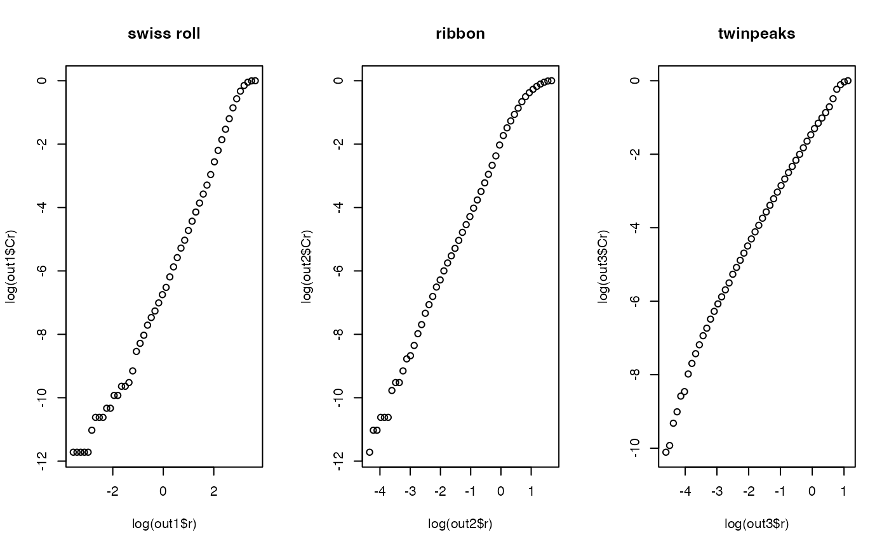

Correlation dimension is a measure of determining the dimension of a given set. It is often referred to as a type of fractal dimension. Its mechanism is somewhat similar to that of box-counting dimension, but has the advantage of being intuitive as well as efficient in terms of computation with some robustness contingent on the lack of availability for large dataset. $$dim(S) = \lim \frac{\log C(r)}{\log r}$$ as \(r\rightarrow 0\), where \(C(r)=\lim (2/(N-1)*N)\sum_i^N \sum_{j=i+1}^N I(\|x_i-x_j\|\le r)\).
an \((n\times p)\) matrix or data frame whose rows are observations.
the number of r (radius) to be tested.
method to estimate the intrinsic dimension; "lm" for fitting a linear model for
the entire grid of values, and "cut" to trim extreme points. "cut" method is more robust.
a vector of ratios for computing estimated dimension in \((0,1)\).
a named list containing containing
estimated dimension using cut values.
a vector of radius used.
a vector of \(C(r)\) as decribed above.
Even though we could use arbitrary cut to compute estimated dimension, it is also possible to
use visual inspection. According to the theory, if the function returns an output, we can plot
plot(log(output$r), log(output$Cr)) and use the linear slope in the middle as desired dimension of data.
The least value for radius \(r\) must have non-degenerate counts, while the maximal value should be the
maximum distance among all pairs of data points across all coordinates. nlevel controls the number of interim points
in a log-equidistant manner.
Grassberger P, Procaccia I (1983). “Measuring the Strangeness of Strange Attractors.” Physica D: Nonlinear Phenomena, 9(1-2), 189--208.
# \donttest{
## generate three different dataset
set.seed(1)
X1 = aux.gensamples(dname="swiss")
X2 = aux.gensamples(dname="ribbon")
X3 = aux.gensamples(dname="twinpeaks")
## compute
out1 = est.correlation(X1)
out2 = est.correlation(X2)
out3 = est.correlation(X3)
## visually verify : all should have approximate slope of 2.
opar <- par(no.readonly=TRUE)
par(mfrow=c(1,3))
plot(log(out1$r), log(out1$Cr), main="swiss roll")
plot(log(out2$r), log(out2$Cr), main="ribbon")
plot(log(out3$r), log(out3$Cr), main="twinpeaks")

par(opar)
# }